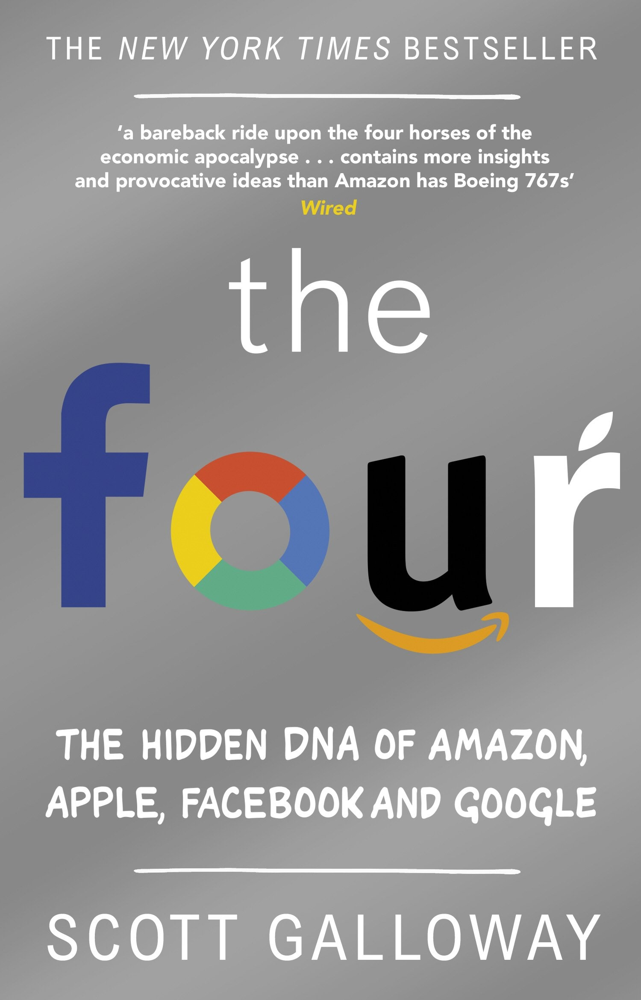
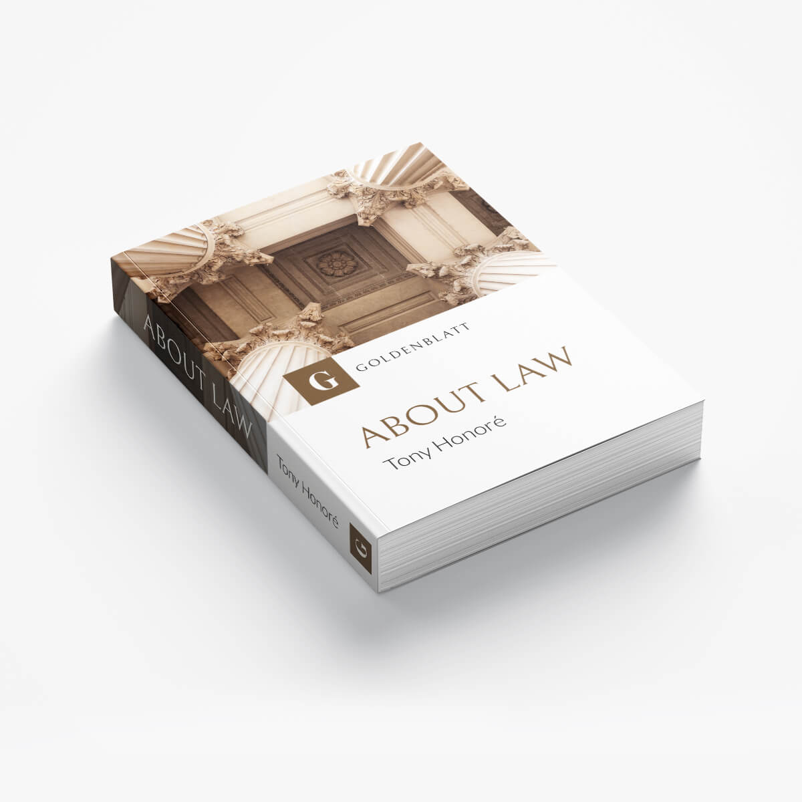

1. The Four - Scott Galloway

NEW YORK TIMES BESTSELLER
USA TODAY BESTSELLER
Amazon, Apple, Facebook, and Google are the four most influential companies on the planet.
Just about everyone thinks they know how they got there. Just about everyone is wrong.
For all that’s been written about the Four over the last two decades,
no one has captured their power and staggering success as insightfully as Scott Galloway.
Instead of buying the myths these companies broadcast, Galloway asks fundamental questions.
How did the Four infiltrate our lives so completely that they’re almost impossible to avoid (or boycott)?
Why does the stock market forgive them for sins that would destroy other firms?
And as they race to become the world’s first trillion-dollar company, can anyone challenge them?
2. Technically Wrong - Sara Wachter, Boettcher
“An entertaining romp that tells us where and why the tech industry, once America’s darling,
went wrong, and what it might do to recover its good graces.” —Tim Wu, author of The Master Switch.
Buying groceries, tracking our health, finding a date: whatever we want to do,
odds are that we can now do it online. But few of us realize just how many oversights, biases,
and downright ethical nightmares are baked inside the tech products we use every day.
It’s time we change that.
In Technically Wrong, Sara Wachter-Boettcher demystifies the tech industry,
leaving those of us on the other side of the screen better prepared to make informed choices
about the services we use—and to demand more from the companies behind them.
A Wired Top Tech Book of the Year
A Fast Company Best Business and Leadership Book of the Year
3. Business Adventures - John Brooks
 “Business Adventures remains the best business book I’ve ever read.” —Bill Gates, The Wall Street Journal
“Business Adventures remains the best business book I’ve ever read.” —Bill Gates, The Wall Street Journal
What do the $350 million Ford Motor Company disaster known as the Edsel, the fast and incredible rise of Xerox,
and the unbelievable scandals at General Electric and Texas Gulf Sulphur have in common?
Each is an example of how an iconic company was defined by a particular moment of fame or notoriety;
these notable and fascinating accounts are as relevant today to understanding the intricacies of corporate life
as they were when the events happened.
Stories about Wall Street are infused with drama and adventure and reveal the machinations and volatile nature
of the world of finance. Longtime New Yorker contributor John Brooks’s insightful reportage is so full of personality
and critical detail that whether he is looking at the astounding market crash of 1962, the collapse
of a well-known brokerage firm, or the bold attempt by American bankers to save the British pound,
one gets the sense that history repeats itself.
Five additional stories on equally fascinating subjects round out this wonderful collection
that will both entertain and inform readers . . .
Business Adventures is truly financial journalism at its liveliest and best.
4. The Outsiders - William N. Thorndike
 “An outstanding book about CEOs who excelled at capital allocation.” — Warren Buffett
“An outstanding book about CEOs who excelled at capital allocation.” — Warren Buffett
Named one of “19 Books Billionaire Charlie Munger Thinks You Should Read” in Business Insider.
“A book that details the extraordinary success of CEOs who took a radically different approach to corporate management.”
— Charlie Munger, Vice-Chairman of Berkshire Hathaway Corporation
“Thorndike explores the importance of thoughtful capital allocation through the stories of eight successful CEOs.
A good read for any business leader but especially those willing to chart their own course.” — Michael Dell,
chairman of the board of directors and chief executive officer of Dell
What makes a successful CEO? Most people call to mind a familiar definition: “a seasoned manager
with deep industry expertise.” Others might point to the qualities of today’s so-called celebrity CEOs—charisma,
virtuoso communication skills, and a confident management style. But what really matters when you run an organization?
What is the hallmark of exceptional CEO performance? Quite simply, it is the returns for the shareholders of
that company over the long term.
5. About Law – Tony Honoré

Here is a simple introduction to the intellectual challenges presented by law in the western secular
tradition written by one of that tradition's most revered and eminent scholars. This book provides the
intelligent student contemplating a career in law with a brief yet comprehensive introduction to the subject.
It also makes an ideal starting point for the general reader who is curious to explore the intellectual interest
of the subject. Treating not just British law, but the whole western tradition of law, Professor Honor�
guides the reader through eleven topics which straddle various branches of the law, including constitutional
and criminal law, property, and contracts. He also explores moral and historical aspects of the law, including
a discussion of justice and the difference between civil and common law systems. The law, Honor� argues,
is mainly concerned with the question of obedience to authority, and establishing the situations in
which obedience is required and those in which it may be waived ought to be the central concern of all legal theorists.
All these issues are examined broadly and simply, keeping technicalities at a minimum. The result is a book
that offers as broad a picture of western law as possible, providing an accessible overview and a firm base for further study.
6. Hillbilly Elegy - J.D. Vance
From a former marine and Yale Law School graduate, a powerful account of growing up in a poor Rust Belt town
that offers a broader, probing look at the struggles of America’s white working class.
Hillbilly Elegy is a passionate and personal analysis of a culture in crisis—that of white working-class Americans.
The decline of this group, a demographic of our country that has been slowly disintegrating over forty years,
has been reported on with growing frequency and alarm, but has never before been written about as searingly
from the inside. J. D. Vance tells the true story of what a social, regional, and class decline feels like
when you were born with it hung around your neck.
The Vance family story begins hopefully in postwar America. J. D.’s grandparents were “dirt poor and in love,”
and moved north from Kentucky’s Appalachia region to Ohio in the hopes of escaping the dreadful poverty around them.
They raised a middle-class family, and eventually their grandchild (the author) would graduate from Yale Law School,
a conventional marker of their success in achieving generational upward mobility.
But as the family saga of Hillbilly Elegy plays out, we learn that this is only the short, superficial version.
Vance’s grandparents, aunt, uncle, sister, and, most of all, his mother, struggled profoundly with the demands
of their new middle-class life, and were never able to fully escape the legacy of abuse, alcoholism, poverty,
and trauma so characteristic of their part of America. Vance piercingly shows how he himself still carries
around the demons of their chaotic family history.
A deeply moving memoir with its share of humor and vividly colorful figures, Hillbilly Elegy is the story
of how upward mobility really feels. And it is an urgent and troubling meditation on the loss of the American dream
for a large segment of this country.
7. Outlier - Malcolm Gladwell
In this stunning new book, Malcolm Gladwell takes us on an intellectual journey through the world
of "outliers"--the best and the brightest, the most famous and the most successful. He asks the question:
what makes high-achievers different?
8. Turtles All The Way Down - John Green
 Named a best book of the year by: The New York Times, NPR, TIME, Wall Street Journal, Boston Globe,
Entertainment Weekly, Southern Living, Publishers Weekly, BookPage, A.V. Club, Bustle, BuzzFeed,
Vulture, and many more!
Named a best book of the year by: The New York Times, NPR, TIME, Wall Street Journal, Boston Globe,
Entertainment Weekly, Southern Living, Publishers Weekly, BookPage, A.V. Club, Bustle, BuzzFeed,
Vulture, and many more!
JOHN GREEN, the acclaimed author of Looking for Alaska and The Fault in Our Stars,
returns with a story of shattering, unflinching clarity in this brilliant novel of love,
resilience, and the power of lifelong friendship.
Aza Holmes never intended to pursue the disappearance of fugitive billionaire Russell Pickett,
but there’s a hundred-thousand-dollar reward at stake and her Best and Most Fearless Friend, Daisy,
is eager to investigate. So together, they navigate the short distance and broad divides
that separate them from Pickett’s son Davis.
Aza is trying. She is trying to be a good daughter, a good friend, a good student, and maybe even
a good detective, while also living within the ever-tightening spiral of her own thoughts.
9. The Alchemist - Panlo Coelho
The Alchemist by Paulo Coelho continues to change the lives of its readers forever.
ith more than two million copies sold around the world, The Alchemist has established itself
as a modern classic, universally admired.
Paulo Coelho's masterpiece tells the magical story of Santiago, an Andalusian shepherd boy
who yearns to travel in search of a worldly treasure as extravagant as any ever found.
The story of the treasures Santiago finds along the way teaches us, as only a few stories can,
about the essential wisdom of listening to our hearts, learning to read the omens strewn
along life's path, and, above all, following our dreams.
10. Blink - Malcolm Gladwell
In his landmark bestseller The Tipping Point, Malcolm Gladwell redefined how we understand
the world around us. Now, in Blink, he revolutionizes the way we understand the world within.
Blink is a book about how we think without thinking, about choices that seem to be made
in an instant-in the blink of an eye-that actually aren't as simple as they seem.
Why are some people brilliant decision makers, while others are consistently inept?
Why do some people follow their instincts and win, while others end up stumbling into error?
How do our brains really work-in the office, in the classroom, in the kitchen, and in the bedroom?
And why are the best decisions often those that are impossible to explain to others?
In Blink we meet the psychologist who has learned to predict whether a marriage will last,
based on a few minutes of observing a couple; the tennis coach who knows when a player will double-fault
before the racket even makes contact with the ball; the antiquities experts who recognize a fake at a glance.
Here, too, are great failures of "blink": the election of Warren Harding; "New Coke"; and the shooting
of Amadou Diallo by police.
Blink reveals that great decision makers aren't those who process the most information or spend
the most time deliberating, but those who have perfected the art of "thin-slicing"-filtering
the very few factors that matter from an overwhelming number of variables.